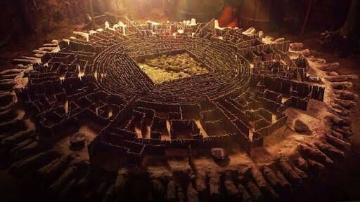
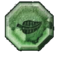

Capítulo 1
Hoje faz três dias desde que os quatro foram banidos de suas terras, está cada vez mais difícil, não só tem os desafios para enfrentar como também precisam achar algo para comer, estão cada vez mais fracos e impotentes, mas, todos eles têm uma grande determinação para continuar e também uma enorme sede de vitória para que ao final de tudo possam retornar os seus lares…
-Rinorí: Você está pronto para amanhã Hiroki?
-Hiroki: Sim, já temos tudo que é necessário para amanhã finalmente chegou a hora.
Nesse exato momento, viram um sinal do primeiro desafio, uma ruína poucos metros apareceu em seus caminhos.
Seguiram rumo a ela e tinha 4 símbolos em seu portal, mas a ruína dava exatamente em um labirinto, onde seus sentidos seriam testados.
Entraram e deram de cara com um livro aberto que dizia: “Quatro caminhos, todos ao lado, um é bom o outro ruim não confie nos outros ou em ninguém seu maior inimigo pode ser você mesmo”.

-Hiroki: Quatro entradas, quatro pessoas
-Elinthy: E agora o que vamos fazer?
-Scarlett: Acho que não podemos nos separar.
-Rinorí: Eu vou testar a porta com símbolo da lua a que der certo, entramos todos
-Hiroki: Eu vou pela de Floco de gelo .

-Scarllet: Eu vou testar a da folha talvez possa ter algo nela.
-Elinthy: Tentarei a das chamas e veremos no que dá.
Cada um então testou um caminho diferente, Hiroki foi pelo caminho do floco de gelo mas quando ele tentou abrir a porta ela se desfaz em suas mãos, já Rinorí optou por testar o caminho com a porta do livro, porém quando ele tentou abrir a porta a mesma caiu em um abismo sem fim, Scarlett testou a porta com a folha entalhada mas quando tentou abri-la também não teve êxito sua porta sumiu do nada.
Tudo parecia ir de mal a pior afinal nenhum deles havia conseguido achar o caminho certo eles começaram a perder a esperança quando de repente Elinthy grita.
Elinthy: Consegui, achei o caminho certo venham logo!
Elinthy testou a porta com símbolo das chamas então ela se abriu, lá dentro havia enormes paredes e um labirinto que não parecia ter fim cada um olhou pra um lado e começaram a andar quando eles menos esperavam, o chão começou a tremer,apareceram várias criaturas com suas formas confundindo-lhes a mente.
- Hiroki:Pessoal o que está acontecendo por aqui?
- Rinorí: Onde estão os verdadeiros?
-Scarlett: Eu sou a verdadeira acredite em mim
Mas as criaturas que tomaram forma de seus corpos repetiam as mesmas coisas que os verdadeiros.
Então Hiroki teve a ideia de usar seu poder, ele pegou seu cetro e espalhou gelo por toda parte, pensando em quem fosse esperto se defenderia, assim que Rinorí percebeu seu movimento ele invocou um grande urso polar que ficou de guarda a sua frente, Elinthy empunhou sua espada e fez picadinho do gelo de Hiroki, Scarlett convocou um espírito da floresta que fez um casulo de árvore em volta de si.

Todas as criaturas a sua volta se dissiparam como poeira.
-Rinorí: Caramba Hiroki poderia ter avisado
-Elinthy: Bem pensado, admiro sua atitude
-Scarlett: Muito bom Hiroki!
-Hiroki: Essa foi por pouco, eu não tinha certeza se iria dar certo.
Continuaram o caminho, e mais a frente surgiu uma coluna separando Hiroki e Scarlett de um lado e Elinthy e Rinorí de outro, ambos começaram a chamar uns aos outros
De um lado Hiroki e Scarlet tentaram seguir em frente na esperança de encontrá-los no caminho, do outro Elinthy e Rinorí tentaram destruir o muro.
-Elinthy: É inútil, quanto mais tempo ficarmos aqui atacando mais tempo vamos perder, vamos seguir em frente talvez encontramos eles no caminho
-Rinorí: Sim.
Então assim todos eles seguiram pelo labirinto, até que Hiroki e Scarlett encontram Rinorí gravemente ferido no labirinto.
-Scarlett: Rinorí!
-Hiroki: Espere Scarlet pode ser mais um daquelas criaturas.
-Rinorí: Me ajudem… Por favor eu não quero morrer…
Nesse momento Hiroki lembra de seus passatempos com Rinorí.
-Hiroki: Pedra?
-Rinorí: O que??
-Hiroki: Pedra?
-Rinorí: Me ajude e pare com isso.
-Hiroki: PEDRA!?
-Scarlett: Hiroki o que é isso? Vamos ajudá-lo logo..
Hiroki enfia seu cetro no pescoço de Rinorí, ele morre revelando a criatura que estava se passando por Rinorí.
-Hiroki: Eu sabia
-Scarlett:O que foi tudo isso?
-Hiroki: Quando éramos crianças eu e Rinorí brincávamos de cavaleiros, e toda vez que alguém entrava no reino deveria dizer “Montanha” quando o outro dissesse “Pedra”, para assim nenhum intruso entrar em nosso reino.
-Scarlett: Você confiou em uma brincadeira para identificá-lo!? Não sei se fico surpreendida com sua lógica ou assustada pois se ele não lembrasse disso estaria morto.
-Hiroki: Se o conheço bem ele não morreria com essa facilidade mesmo mobilizado ele ainda conseguiria invocar alguma coisa
-Scarlett: Então vamos logo esse labirinto não vai terminar sozinho!
A situação de Rinorí e Elinthy também não era das melhores, deram voltas e mais voltas e nenhum caminho era o certo, então Rínorí se dispersou por um momento, e Elinthy estava empunhando uma espada contra ele.
-Rinorí: O que você está fazendo??
-Elinthy: Você pensou mesmo que eu acreditaria nessa sua encenação barata, você é o pior de todos aqui e você tem que concordar com isso, ninguém aqui gosta de você muito menos eu mas, se eu te matar aqui e agora, poderei achar uma forma mais rapida de sair daqui para asssim eliminar o mal do meu caminho.
-Rinorí: Como você pode me julgar desse jeito, voce é ridicula, voce acha mesmo que eu vou deixar você me matar, é uma estúpida.
Elinthy atacou Rinorí, golpeou pelo lado direito, mas Rinorí invocou um leão, que mordeu uma perna de Elinthy, ela urrou de dor, mas diferiu um soco na cara do leão, e o partiu ao meio com sua espada.
-Elinthy: Você é ingênuo Rinorí chega ser encantador, mas eu não tenho paciência!
Elinthy avançou com a espada e sua mira acertaria o coração de Rinorí. Mas…
-Elinthy: Rinoríii!
A verdadeira Elinthy apareceu e enfiou a espada no coração daquela criatura que era sua cópia.
-Rinorí: Você me assustou muito Elinthy!
-Elinthy: Me desculpa eu estava tentando achar uma saída,mas quando olhei você já não estava mais lá, eu fiquei te procurando e vi o que estava acontecendo, ainda bem que cheguei a tempo.
-Rinorí: Muito obrigado, melhor continuarmos nossa jornada.
Os dois seguiram rumo a uma parede que tinha tijolos meios soltos, então Elinthy deu um chute neles que saíram voando revelando a saída, do outro lado depois de dar tantas voltas Hiroki e Scarlett também apareceram, e assim todos passaram o primeiro desafio, e conseguiguiram sair da ruína,
Ao sairem da ruína, contaram sobre o que tinham acontecido com cada um, e então seguiram rumo, ao resto da jornada.
Responda a pergunta a seguir para prosseguir com a jornada